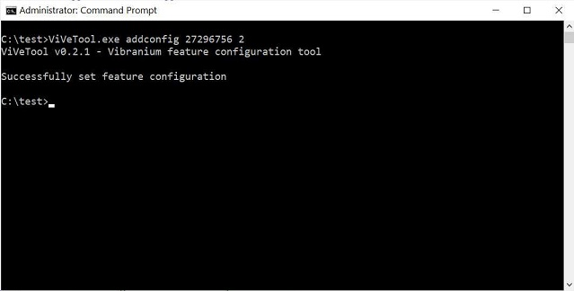

Работа с терминалом Windows
Запуск командной строки
Для запуска командной строки можно воспользоваться одним из следующих способов:
Пуск – Выполнить (или клавиши Win+R) введите cmd и нажмите клавишу Enter;
Пуск – Все программы – Стандартные – Командная строка»;
Пуск – Поиск – Командная строка.

Использование истории команд и горячих клавиш
F1 – посимвольный вызов последней введенной команды. Каждое нажатие F1 приводит к последовательной подстановке в поле ввода одного символа из предыдущей команды.
F2 – копирование до символа. После нажатия на F2 на экране отображается запрос символа, до которого будет скопирована предыдущая команда. Например, если предыдущая команда была ping yandex.ru, и в качестве символа задана точка, то в строку ввода команды будет занесено ping yandex, если задан пробел, то - ping.
F3 – вызов предыдущей команды.
F4 – удалить до символа. Выполняется удаление текста от текущей позиции курсора до заданного символа.
F5 и
F8 – вызов буфера ранее введенных команд. Вывод по нажатию клавиши F5 прекращается когда будет отображена первая введенная команда текущей сессии.
F7 – отображение ранее введенных команд в отдельном окне в виде списка. Для выполнения нужной команды нужно выбрать ее, используя клавиши со стрелками, и нажать ENTER.
F9 – выполнить команду, номер которой запрашивается. Номер команды в списке истории можно получить при использовании F7.
В Windows 10 / Windows Server 2016 появились возможности, отсутствующие в предыдущих реализациях командной строки:
- Изменение прозрачности окна консоли при нажатии комбинаций
CTRL+Shift+- или
CTRL+Shift++
- Включение / выключение полноэкранного режима при нажатии
CTRL+Enter.
- Расширение возможностей выделения текста и редактирования:
Shift+Home – выделить текст от текущего положения курсора до начала строки.
Shift+End – выделить текст от текущего положения курсора до конца строки.
- Быстрое перемещение по буферу экрана и поиск по контексту:
CTRL+Home – перейти в начало буфера экрана.
CTRL+End – перейти в конец буфера экрана.
CTRL+Стрелка Вверх – перемещение на 1 строку вверх.
CTRL+Стрелка Вниз – перемещение на 1 строку вниз.
CTRL+F – открыть диалог поиска текста в буфере экрана.
Окно командной строки в Windows 10 можно закрыть с помощию стандартной комбинации клавиш
ALT+F4.
Основные команды терминала Windows
assoc – выводит или изменяет сопоставления (associations) типов файлов;
break – задает точки останова при отладке;
call – вызывает из сценария процедуру или другой сценарий;
cd (chdir) – показывает имя текущего каталога или выполняет смену текущего каталога;
cls – очищает окно командной строки и буфер экрана;
color – задает цвета текста и фона окна командной оболочки;
сору – копирует файлы или выполняет конкатенацию файлов;
date – показывает или устанавливает текущую дату;
del (erase) – удаляет заданный файл, группу файлов или каталог;
dir – показывает список подкаталогов и файлов в текущем или заданном каталоге;
echo – выводит текст в окно командной строки или задает, надо ли отображать команды на экране (on|off);
exit – выход из оболочки командной строки;
for – выполняет заданную команду для каждого файла в наборе;
ftype – выводит или изменяет текущие типы файлов в сопоставлениях расширений файлов с программами;
if – выполняет команды по условию;
md (mkdir) – создает подкаталог в текущем или заданном каталоге;
move – перемещает файл или группу файлов из текущего или заданного исходного каталога в указанный каталог. Также может переименовывать каталог;
pause – останавливает выполнение пакетного файла и ожидает ввода с клавиатуры;
rd (rmdir) – удаляет каталог или каталог вместе с его подкаталогами;
start – запускает заданную программу или команду в отдельном окне;
time – показывает или устанавливает системное время;
title – задает заголовок окна командной оболочки;
type – показывает содержимое текстового файла;
verify – включает режим проверки файлов после записи на диск.